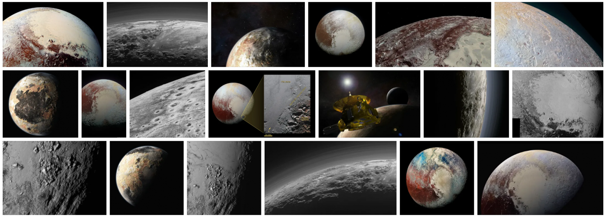

В поисках свежести
20 марта 2010 года началось извержение вулкана Эйяфьядлайёкюдль в Исландии. 14 июля 2015 года межпланетная станция New Horizons передала на Землю фотографии Плутона. 15 апреля 2019 года случился пожар в соборе Парижской Богоматери. Что общего в этих случаях?
Каждое подобное событие сопровождается всплеском интереса со стороны пользователей интернета. Люди хотят не только прочитать о том, что произошло, но и взглянуть на фотографии. Они идут в поиск картинок и ожидают найти там свежие, актуальные снимки, которые могли не существовать ещё несколько часов назад. Интерес возникает неожиданно и за несколько дней падает почти до нуля.
Особенность ситуации в том, что обычные поисковые механизмы не заточены на подобный сценарий. Более того, критерий свежести контента противоречит другим важным свойствам хорошего поиска: релевантности, авторитетности и т. д. Нужны особые технологии, чтобы не просто находить новый контент, но и сохранять баланс в результатах.
Меня зовут Денис Сахнов, сегодня я расскажу о новом подходе к доставке свежего контента до Яндекс.Картинок. А мой коллега Дмитрий Кривоконь @krivokon поделится подробностями о метриках и ранжировании свежих картинок. Вы узнаете о старом и новом подходе к оценке качества. А ещё мы напомним о YT , Logbroker и RTMR.
Чтобы поиск картинок работал хорошо на той части запросов, ответы на которые должны содержать свежий контент, нужно решить следующие задачи:
- Научиться быстро находить и скачивать свежие картинки.
- Научиться быстро их обрабатывать.
- Научиться быстро собирать документы для поиска на базе картинок (этот пункт станет понятнее по ходу повествования).
- Cформулировать критерии качества поиска свежего контента.
- Научиться ранжировать и смешивать контент в выдаче, исходя из требований качества.
Начнём с первого пункта
1. Добываем картинки
В интернете множество сайтов, многие из них что-то регулярно публикуют, в том числе картинки. Чтобы люди увидели всё это в поиске Картинок, робот должен дойти до сайта и скачать контент. Обычно поиск так и работает: мы относительно быстро обходим известные нам сайты и получаем новые картинки. Но когда речь идёт о контенте, который вдруг становится актуальным прямо сейчас, эта модель не справляется. Потому что интернет огромный, невозможно «прямо сейчас» скачать HTML-документы всех сайтов в мире и быстро всё это переварить. По крайней мере никто в мире такую задачу ещё не решил.
Кто-то может представить себе решение проблемы таким образом: отслеживать всплески запросов и в первую очередь обрабатывать только те источники, которые как-то соответствуют запросам. Но это хорошо звучит только на бумаге. Во-первых, чтобы проверить соответствие чего-то чему-то, нужно уже иметь на руках контент. Во-вторых, если мы начинаем что-то делать после пика запросов, то мы уже опоздали. Как бы дико это ни звучало, нужно находить свежий контент до того, как в нём возникла потребность. Но как предсказать неожиданное?
Правильный ответ: никак. Мы ничего не знаем о графике извержений вулканов. Но мы знаем, на каких сайтах обычно появляется свежий и полезный контент. С этой стороны мы и пошли. Мы стали применять машиннообученную формулу, которая приоритизирует обход нашего робота в зависимости от качества и актуальности контента. Да простят нас сеошники: в детали тут углубляться не будем. Задача робота — как можно быстрее доставить до нас HTML-документы. Только после этого мы можем взглянуть на их начинку и найти там новые тексты, ссылки на картинки и т. п.
Ссылки на картинки — это хорошо, но пока что не особо полезно для поиска. Их в первую очередь нужно скачать к нам. Но новых ссылок на картинки опять же слишком много, чтобы скачать их мгновенно. И проблема тут не только в наших ресурсах: владельцы сайтов тоже не хотели бы, чтобы Яндекс их случайно заддосил. Поэтому мы используем машинное обучение для приоритизации скачивания картинок. Факторы разные, их много, всё объяснять не будем, но для примера можем сказать, что частота, с которой картинка появляется на разных ресурсах, тоже влияет на приоритет.
Теперь у нас есть список ссылок на картинки. Дальше мы их скачиваем к себе. При этом используем собственный сервис Logbroker. Эта штука выступает в качестве транспортной шины, успешно переживающей огромные объёмы трафика. Несколько лет назад наш коллега Алексей Озерицкий уже рассказывал об этой технологии на Хабре.
На этом первый этап логически завершился. Мы определились с источниками и успешно добыли какие-то картинки. Осталось совсем чуть-чуть: научиться с ними работать.
2. Обрабатываем картинки
Сами по себе картинки, конечно, полезны, но их ещё нужно подготовить. Это происходит так:
- В сервисе stateless-вычислений RTHub готовятся версии разных размеров. Это нужно для поиска, где удобно в результатах показывать миниатюры, а исходный контент отдавать с сайта-источника по клику.
- Рассчитываются нейросетевые фичи. В офлайне (т. е. заранее, а не в момент ранжирования) на машинках с GPU запускаются нейросетки, результатом работы которых будут векторы фич картинки. А также вычисляются значения полезных классификаторов: красивости, эстетичности, нежелательного контента и многие другие. Всё это нам ещё понадобится.
- А затем с использованием посчитанной по картинке информации склеиваются дубликаты. Это важно: пользователь вряд ли обрадуется поисковым результатам, в которых будут преобладать одни и те же картинки. При этом они могут немного отличаться: где-то обрезали край, где-то добавили водяной знак и т. д. Склейку дубликатов мы проводим в два этапа. Сначала происходит грубая кластеризация близких картинок с помощью нейросетевых векторов. При этом картинки в кластере могут даже не совпадать по смыслу, но это позволяет распараллелить дальнейшую работу с ними. Далее уже внутри каждого кластера склеиваем дубликаты через поиск опорных точек на картинках. Обратите внимание: нейросети отлично ищут похожие картинки, но для поиска полных дубликатов эффективнее менее «модные» инструменты; нейросетки могут перемудрить и увидеть «одинаковое в разном».
Итак, к концу этого этапа у нас есть готовые картинки в разных вариантах, прошедшие через склейку дубликатов, с предпросчитанными нейросетевыми и прочими фичами. Отдаём в ранжирование? Нет, ещё рано.
3. Собираем картинки в документы
Документ — это наше название сущности, которая участвует в ранжировании. Со стороны пользователя это может выглядеть как ссылка на страницу (поиск по сайтам), картинка (поиск картинок), ролик (поиск видео), кофеварка (поиск товаров), что-то ещё. Но внутри за каждой единицей в выдаче поиска скрывается целый букет разнородной информации. В нашем случае — не только сама картинка, её нейросетевые и прочие фичи, но и сведения о страницах, где она помещена, тексты, которые на этих страницах её описывают, статистика поведения пользователей (например, клики по картинке). Всё вместе — это и есть документ. И прежде чем перейти непосредственно к поиску, документ нужно собрать. И механизм формирования обычной поисковой базы картинок здесь не подходит.
Основной вызов в том, что разные компоненты документа формируются в разное время и в разных местах. Сведения о страницах и текстах может загрузить тот же самый Logbroker, но не одновременно с картинками. Данные о поведении пользователей в реалтайме поступают через систему обработки логов RTMR . И всё это хранится независимо от картинок. Чтобы собрать документ, нужно последовательно обойти разные источники данных.
4. Измеряем качество
Общий подход к оптимизации качества поиска начинается с выбора метрики. В поиске картинок Яндекса вид метрики примерно такой:
где
n — это количество первых картинок (документов) выдачи, которые мы
оцениваем;
p_i — вес позиции в выдаче (чем выше позиция, тем больше вес);
r_i — релевантность (насколько точно картинка соответствует
запросу);
w_i … m_i — прочие компоненты качества ответа (свежесть, красота,
размер...);
f(...) — модель, которая агрегирует эти компоненты
Проще говоря, чем выше в выдаче будут более полезные картинки, тем больше сумма в этом выражении.
Несколько слов о модели f(...). Она обучается на попарном сравнении картинок толокерами. Человек видит запрос и две картинки, а затем выбирает лучшую. Если повторить это много-много раз, то модель научится предсказывать, какой компонент качества наиболее важен для конкретного запроса.
К примеру, если запрос о свежих фотографиях чёрной дыры — то наибольший коэффициент у компонента свежести. А если о тропическом острове — то у красоты, потому что мало кто ищет любительские фотографии страшненьких островов, обычно нужны именно привлекательные картинки. Чем визуально лучше выглядит выдача картинок в таких случаях, тем больше вероятность, что человек продолжит пользоваться сервисом. Но не будем отвлекаться на это.
5. Ранжируем
Напомню, выше мы описали переход от первого подхода к оценке качества поиска картинок ко второму: от подмешивания результатов к ежедневному пополнению приёмочной корзины свежими запросами. Парадигма сменилась — понадобились изменения и самих алгоритмов. Это достаточно непросто объяснить читателям со стороны, но я попробую. Если останутся вопросы — смело задавайте их в комментариях.
Раньше методы были реализованы по аналогии с решением, о котором рассказывал наш коллега Алексей Шаграев. Есть основной источник документов (основной поисковый индекс). А ещё есть дополнительный источник свежих документов, для которых критична скорость попадания в поиск. Документы из разных источников нельзя было ранжировать по единой логике, поэтому мы по достаточно нетривиальной схеме подмешивали документы из свежего источника в основную выдачу. Далее сравнивали метрики основной выдачи без дополнительных документов и с ними.
Сейчас ситуация другая. Да, источники по-прежнему физически разные, но с точки зрения метрик совершенно неважно, откуда именно пришла свежая картинка. Она может и из основного источника попасть, если обычный робот успел до неё добраться. В этом случае метрики будут идентичны той ситуации, когда эта же картинка добралась до выдачи через отдельный источник. В новом подходе есть содержательная свежесть запроса и результата, а архитектура источников уже не так важна. В результате и основные, и свежие документы ранжируются с помощью одной и той же модели, что позволяет нам подмешивать свежие картинки в выдачу по существенно более простой логике, чем раньше: путём простой сортировки по значению на выходе единой модели. Конечно же, это отразилось и на качестве.